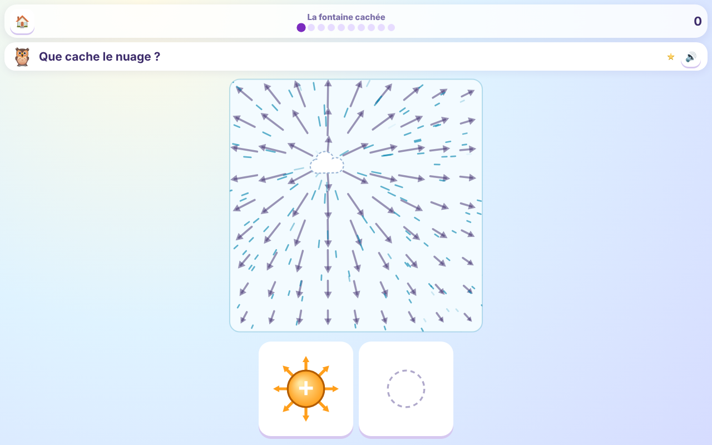

Strange Mind
Des jeux pour sentir les rotations, les nombres complexes, les matrices… et les idées des équations de Maxwell, sans une seule formule.

Le vent invisible
9 mini-jeux vers les équations de Maxwell, dès 6 ans : fontaines cachées, moulinets, tour du lac, fils et boussoles, aimant qui allume une lampe, et la loupe magique qui lit « ce qui sort + ce qui tourne ». Tous les jeux sont ouverts dès le départ.
Les leçons
6 leçons guidées, dès 5 ans, avec des formes qu'on fait tourner et des consignes lues à voix haute : la machine à tourner, la racine magique, la grille qui transforme, le jardin qui disparaît, deux miroirs, le tourbillon secret.
Les autres versions (défis éclair, tiroirs magiques, leçons complètes, cubes qui roulent, tourbillons, chasse aux relations) sont sur fxpar.github.io/kid-games.